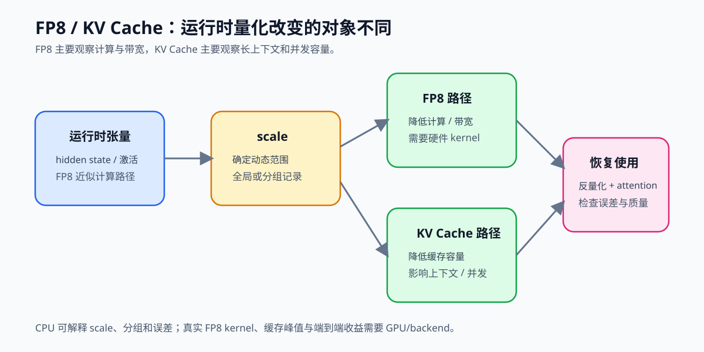

41. FP8 and KV Cache Quantization | FP8 与 KV Cache 量化
难度： Hard | 环境： CPU-first | 标签： 量化压缩, FP8, KV Cache | 目标人群： 量化压缩学习者
本节导读
第 40 节关注的是权重量化：把模型参数压得更小，降低加载和访存成本。但推理阶段的压力不只来自权重。长上下文生成时，KV Cache 会随着序列长度和并发请求持续增长；同时，部分激活或中间张量也会带来带宽压力。只压权重，不能完全解决长上下文推理的显存和带宽瓶颈。
本节用一个极简 FP8KVCacheSim 模拟两类推理量化：用对称低精度量化近似 FP8 张量，用分组 scale 量化 KV Cache。学完后，你应该能看清“量化值、scale、反量化、误差检查”这条闭环，以及为什么 KV Cache 通常需要按最后一维分组处理。
本节关注运行时张量和 KV Cache：CPU 模拟解释 scale、分组和误差，40 继续处理 GPTQ/AWQ 权重量化，67 负责 GGUF、真实 FP8 kernel 和 backend 验证。
关键词： FP8, KV cache quantization, deployment

题目与测试代码 · Cell 8
class FP8KVCacheSim(nn.Module):
"""极简版 FP8 与 KV Cache 量化模拟器。"""
def __init__(self, fp8_qmax: int = 127, kv_group_size: int = 64, eps: float = 1e-8):
super().__init__()
if kv_group_size <= 0:
raise ValueError("kv_group_size must be positive")
self.fp8_qmax = fp8_qmax
self.kv_group_size = kv_group_size
self.eps = eps
self.register_buffer("fp8_q", torch.empty(0, dtype=torch.int8), persistent=False)
self.register_buffer("fp8_scale", torch.tensor(1.0), persistent=False)
self.register_buffer("kv_q", torch.empty(0, dtype=torch.int8), persistent=False)
self.register_buffer("kv_scale", torch.empty(0), persistent=False)
self.fp8_shape = None
self.kv_shape = None
def _sym_quantize(self, x: torch.Tensor, qmax: int):
x = x.detach().float()
# ==========================================
# TODO 1: 补完对称量化闭环
# 提示: 先算 absmax，再算 scale = qmax / absmax.clamp_min(self.eps)，
# 最后做 round + clamp + int8 转换得到 q。
# ==========================================
# absmax = ???
# scale = ???
# q = ???
return q, scale
def _sym_dequantize(self, q: torch.Tensor, scale: torch.Tensor):
return q.to(scale.dtype) / scale.clamp_min(self.eps)
def quantize_fp8(self, x: torch.Tensor):
q, scale = self._sym_quantize(x, self.fp8_qmax)
self.fp8_q = q
self.fp8_scale = scale
# ==========================================
# TODO 2a: 记录 FP8 近似张量的原始 shape
# 提示: 这里先记录 self.fp8_shape = tuple(x.shape)。
# 后面 quantize_kv_cache 里再补 n_groups，用它初始化 scales。
# ==========================================
# self.fp8_shape = ???
return q, scale
def dequantize_fp8(self):
if self.fp8_shape is None:
raise RuntimeError("Call quantize_fp8() before dequantize_fp8().")
return self._sym_dequantize(self.fp8_q, self.fp8_scale)
def quantize_kv_cache(self, kv_cache: torch.Tensor):
kv = kv_cache.detach().float()
if kv.ndim < 2:
raise ValueError("KV cache should have at least 2 dimensions.")
last_dim = kv.size(-1)
# ==========================================
# TODO 2b: 记录 KV Cache 的分组状态
# 提示: n_groups 用向上取整计算，最后一组可以不足 kv_group_size。
# ==========================================
# n_groups = ???
qkv = torch.zeros_like(kv, dtype=torch.int8)
scales = torch.zeros(kv.shape[:-1] + (n_groups,), dtype=kv.dtype, device=kv.device)
flat = kv.reshape(-1, last_dim)
flat_q = qkv.reshape(-1, last_dim)
flat_scale = scales.reshape(-1, n_groups)
for row in range(flat.size(0)):
for g in range(n_groups):
start = g * self.kv_group_size
end = min(start + self.kv_group_size, last_dim)
chunk = flat[row, start:end]
if chunk.numel() == 0:
continue
q, scale = self._sym_quantize(chunk, self.fp8_qmax)
flat_q[row, start:end] = q
flat_scale[row, g] = scale
self.kv_q = qkv
self.kv_scale = scales
self.kv_shape = tuple(kv.shape)
return qkv, scales
def dequantize_kv_cache(self):
if self.kv_shape is None:
raise RuntimeError("Call quantize_kv_cache() before dequantize_kv_cache().")
kv = self.kv_q.to(self.kv_scale.dtype)
last_dim = kv.size(-1)
n_groups = self.kv_scale.size(-1)
flat = kv.reshape(-1, last_dim)
flat_out = torch.zeros_like(flat, dtype=self.kv_scale.dtype)
flat_scale = self.kv_scale.reshape(-1, n_groups)
for row in range(flat.size(0)):
for g in range(n_groups):
start = g * self.kv_group_size
end = min(start + self.kv_group_size, last_dim)
scale = flat_scale[row, g]
# ==========================================
# TODO 3a: 恢复当前 KV Cache 分组
# 提示: 先用当前 group 的 scale 恢复 flat[row, start:end]，
# 再把 restored_chunk 写回 flat_out 的同一区间。
# ==========================================
# restored_chunk = ???
flat_out[row, start:end] = restored_chunk
return flat_out.reshape(self.kv_shape)
def fit(self, hidden_states: torch.Tensor, kv_cache: torch.Tensor | None = None):
self.quantize_fp8(hidden_states)
if kv_cache is not None:
self.quantize_kv_cache(kv_cache)
return self
def forward(self, hidden_states: torch.Tensor, kv_cache: torch.Tensor | None = None):
fp8_q, fp8_scale = self._sym_quantize(hidden_states, self.fp8_qmax)
fp8_restored = self._sym_dequantize(fp8_q, fp8_scale)
if kv_cache is None:
return fp8_restored
self.quantize_kv_cache(kv_cache)
kv_restored = self.dequantize_kv_cache()
return fp8_restored, kv_restored
def mse(self, original: torch.Tensor, restored: torch.Tensor) -> torch.Tensor:
# ==========================================
# TODO 3b: 计算恢复误差
# 提示: 把 original / restored 转成 float 后，相减平方再求平均。
# ==========================================
# error = ???
return error
题目与测试代码 · Cell 9
# 测试你的实现
def test_fp8_kv_cache_quantization():
try:
torch.manual_seed(0)
sim = FP8KVCacheSim(fp8_qmax=127, kv_group_size=4)
hidden = torch.randn(2, 8)
kv = torch.randn(2, 3, 8)
sim.fit(hidden, kv)
hidden_restore = sim.dequantize_fp8()
kv_restore = sim.dequantize_kv_cache()
out_hidden, out_kv = sim.forward(hidden, kv)
assert sim.fp8_q.dtype == torch.int8
assert sim.kv_q.dtype == torch.int8
assert sim.fp8_shape == tuple(hidden.shape)
assert sim.kv_shape == tuple(kv.shape)
assert sim.kv_scale.shape == (2, 3, 2)
assert hidden_restore.shape == hidden.shape
assert kv_restore.shape == kv.shape
assert out_hidden.shape == hidden.shape
assert out_kv.shape == kv.shape
assert float(sim.mse(hidden, hidden_restore)) >= 0.0
zero = torch.zeros(2, 7)
zero_kv = torch.zeros(1, 2, 7)
sim.fit(zero, zero_kv)
assert torch.isfinite(sim.dequantize_fp8()).all()
assert torch.isfinite(sim.dequantize_kv_cache()).all()
assert sim.kv_scale.shape[-1] == 2, '非整除的最后一维应向上取整分组'
print('✅ FP8KVCacheSim 测试通过')
except NotImplementedError as e:
raise NotImplementedError('请先完成 TODO 代码！') from e
except (AttributeError, NameError, TypeError, ValueError, RuntimeError, AssertionError) as e:
raise NotImplementedError('请先完成 TODO 代码！') from e
test_fp8_kv_cache_quantization()
本区由当前 Notebook 题目区生成。下面的精讲用于概念练习；回到 Notebook 时以本区的函数签名、TODO 和测试为准。参考答案及可选实验请在 Notebook 中查看。